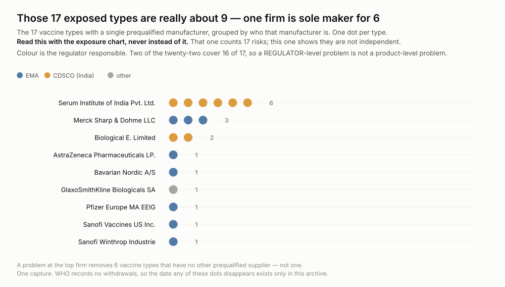
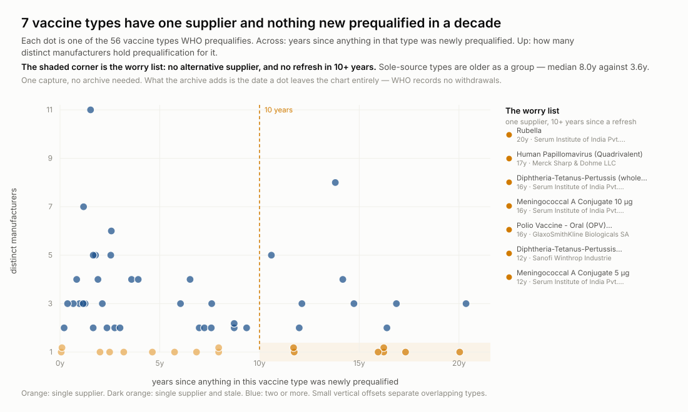
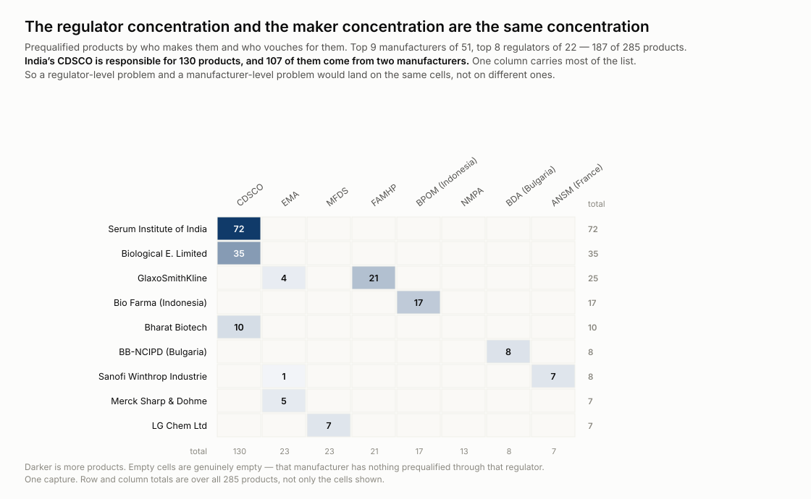
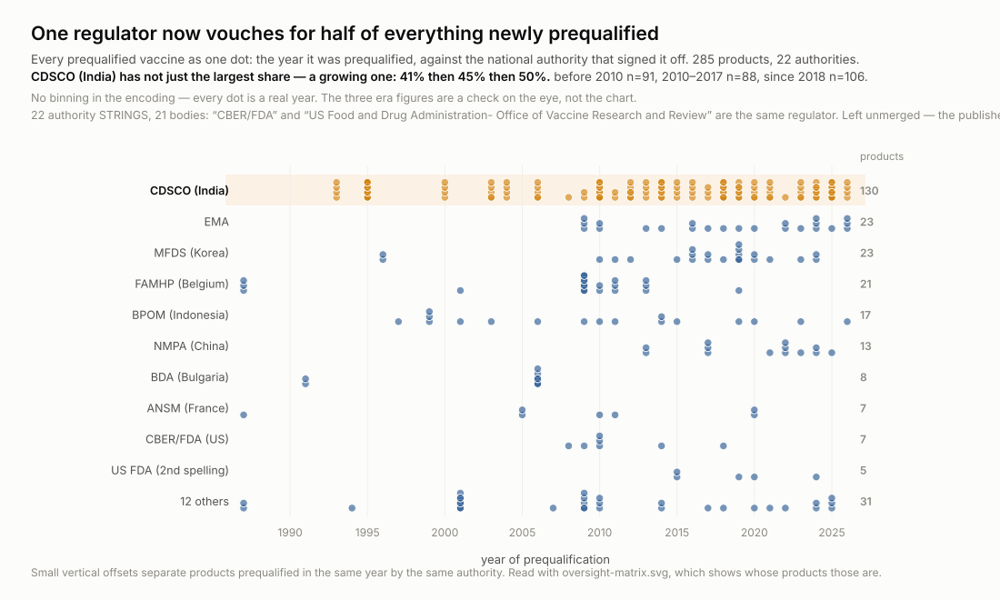
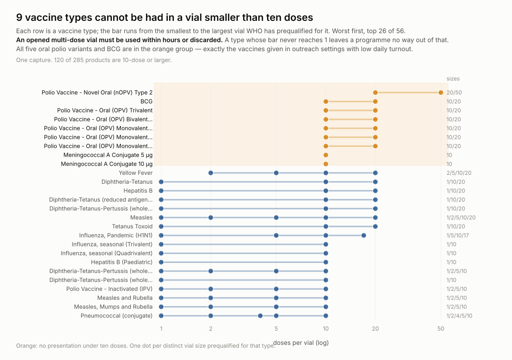

Point-in-time captures from 1 source that do not keep their own history. Each capture stores the bytes as served, with a manifest row recording the URL, fetch time and SHA-256.
History held: 2026-09-15 to 2026-09-15.
Figures are rebuilt from the derived tables on every run; each one names the entities it is about so it can be acted on without a further query.





| source | publisher | cadence | terms |
|---|---|---|---|
who.pq.vaccines | World Health Organization | monthly | CC BY-NC-SA 3.0 IGO — https://www.who.int/about/policies/publishing/copyright |
Derived tables are CSV under data/ in
the repository; the bytes they came from are under
raw/, and SOURCES.md lists every source URL.
Every observation carries source_id and raw_ref. The
matching manifest row holds that raw_ref with the URL, the fetch
timestamp and a SHA-256 of exactly what came back, so any number here traces to
the bytes it came from.
Cite this dataset by its repository and the date you took it from: https://github.com/wss-who-prequal, accessed 2026-09-15.